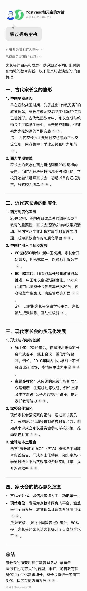
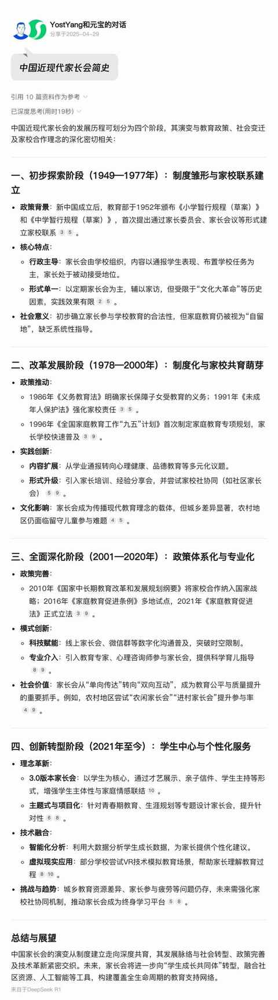
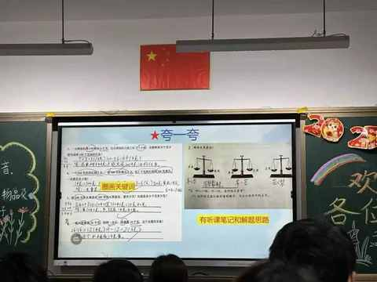
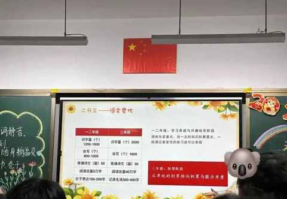
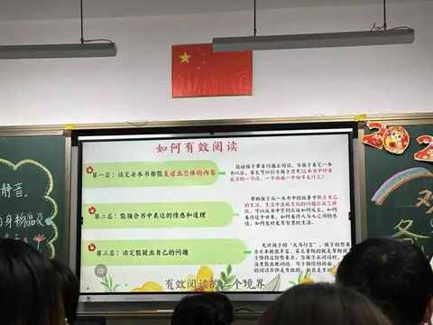
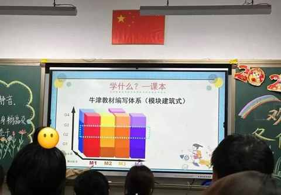
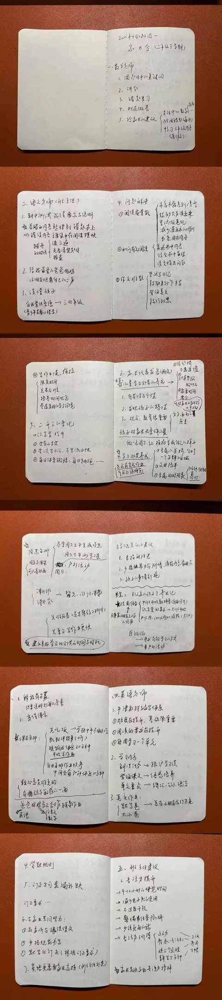

一位父亲四刷家长会的转变：从摆烂到全场记笔记！
有感于刚参加完 的第四个家长会，即二年级下学期的期中家长会，可谓字面意义上的 一期一会。

或许是年龄渐长后的心态变化： 决心不摆烂了，要放下抵触的情绪认真参会！
主要是突然想通一个逻辑：
不管是对于组织者还是参与者而言，没人真心喜欢会议，但定期举行的家长会确实有其必要性。
既然每个学期都有那么一天的晚上是要在教室里面待上 90-120 分钟，和授课老师还有同学的家长一起，度过节奏极其紧凑的一段时光。
那么，秉持积极和开放的心态去应对就一定会有收获！
一、家长会的由来
针对家长会的由来，Ai 做了很全面的回答，简单来说自古以来就有类似家长会的形态，不过近现代以来的家长会是学习西方教育的产物，在当下已经是很本土化的形式与形态。

另外，作为在农村上学的 90 年生人，整个学生生涯都是没有家长会的，一般是家长有事情找老师或者是被老师找。
同时期的在城市长大的同龄人估计会更早接触到家长会，所以有特地让 Ai 总结了中国近现代的家长会简史：

二、小学家长会的特点：
1️⃣ 时间安排
① 通常会被安排在期中考试后的 2-3 周
② 会设置在周中的某一个晚上: 6 点半到 8 点半进行
③ 总体时长在 90-120 分钟，可能会超时但绝不可能提前结束
2️⃣ 会议节奏
① 十分紧凑，信息量足，全程无尿点
② 各科老师轮流讲解本学期学习情况
③ 家长想闲聊都得等会议后才有时间
3️⃣ 家长要做的
① 准时到场
② 入场后签到
③ 坐上孩子的座位
④ 手机 设为静音
⑤ 认真听讲，适时鼓掌
三、本次有什么不一样
1️⃣ 发言顺序
数学老师先行发言，由于每位老师都教授多个班级，而全年级的家长会都在同一个时间，每次哪位老师先讲有随机性。
2️⃣ 新增家长分享环节
两位妈妈从各自的经验与感受，分享了育儿心得与体会，都提到了时间规划和户外活动的重要性。
3️⃣ PPT信息量增加




估计是下半年就升三年级了，老师们的 PPT 也都扩容，讲解的过程中家长们也纷纷拍照。
四、开完会的感受
1️⃣ 接纳自身情绪
虽然知道考试后肯定有家长会，但在看到会议通知的时候，还是会有点抵触，有点不良情绪。
思来想去，再正常不过，这是对会议的正常反应。
2️⃣ 积极参与很重要
本次也是首次尝试用全程做会议记录的方式去全情参与整个会议。
响应绿色出行的号召，骑自行车到的学校，特地带了笔和本子。
让自己全程记录会议要点之后，完全不觉得会议时间长了，显著减少看手机和看时间的频次，对会议内容也能 get 到更多。
以下为完整记录内容：

3️⃣ 什么是最重要的？
老师们、家长们、学生们估计都有属于自己的答案。
在这三个角色中，家长的重要性不言而喻，那么对家长而言什么是最重要的，就必然投射到小孩身上。
作为一名家长，一位父亲，目前依然没有清晰的答案，只能说家长需要学的需要克服的不比小孩少💪。
4️⃣ 育人先育己
这 是每位家长的课题： 你的孩子会生长成你的样子！
不管承认与否，事实就会如此。
如果你不运动，肯定无法带动小孩多运动。
如果你是 i 人，千万别期待小孩就是天生 e 人。
……
当然，你能强制小孩去做到一些事情，但最终的结果或许依然是：
你做不到的事情，小孩子也很难做到。